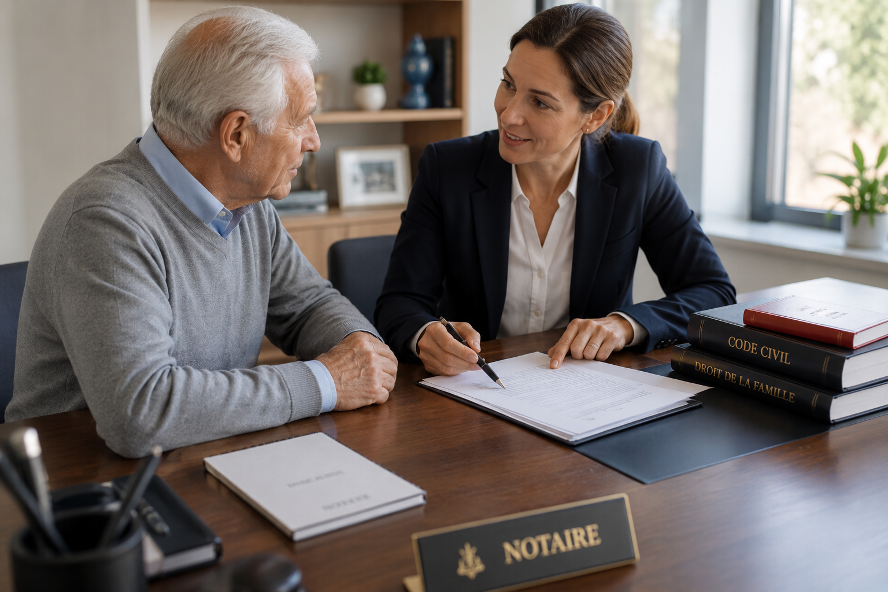

Notre expertise
Transmission & organisation patrimoniale
Préserver, organiser et transmettre votre patrimoine dans les meilleures conditions juridiques et fiscales.
Patrimoine · Fiscalité · Transmission
Une stratégie patrimoniale sur mesure
Le patrimoine se construit, se protège et se transmet. L’office vous accompagne dans l’analyse de votre situation familiale, immobilière, professionnelle et fiscale afin de mettre en place des solutions cohérentes, sécurisées et adaptées à vos objectifs.

Anticiper pour mieux transmettre
Organiser sa transmission
La transmission d’un patrimoine ne s’improvise pas. Une réflexion anticipée permet de protéger vos proches, d’assurer l’équilibre familial et d’éviter les situations de blocage ou de conflit.
L’office vous accompagne dans la mise en place des outils adaptés à votre situation personnelle et patrimoniale.
- Donation simple ou donation-partage
- Démembrement de propriété
- Transmission progressive aux enfants
- Protection du conjoint survivant
- Préservation de l’équilibre familial
Fiscalité & structuration
Organiser et optimiser son patrimoine
Chaque patrimoine est unique. L’analyse doit tenir compte de la composition de vos biens, de votre situation familiale, de vos objectifs de transmission et de vos enjeux fiscaux.
Nous vous aidons à identifier les solutions les plus pertinentes afin d’allier sécurité juridique, efficacité fiscale et sérénité familiale.
- Donations successives
- Démembrement et réserve d’usufruit
- Assurance-vie et clauses bénéficiaires
- Transmission immobilière
- Structuration familiale du patrimoine

Immobilier familial
SCI familiale et détention immobilière
La Société Civile Immobilière peut constituer un outil efficace pour organiser la détention d’un patrimoine immobilier, faciliter sa gestion et préparer sa transmission.
Elle permet notamment d’éviter certaines difficultés liées à l’indivision et d’organiser progressivement la transmission des parts sociales.
- Création de SCI familiale
- Rédaction des statuts
- Transmission de parts sociales
- Organisation de la gouvernance familiale
- Gestion d’un patrimoine immobilier commun
Dirigeants & entreprises
Patrimoine du chef d’entreprise
Le patrimoine du chef d’entreprise présente souvent une dimension à la fois professionnelle, familiale et fiscale. Sa transmission nécessite une préparation rigoureuse et une parfaite coordination entre les conseils.
L’office accompagne les dirigeants dans leurs opérations de structuration, de cession ou de transmission familiale.
- Transmission d’entreprise
- Pacte Dutreil
- Cession de titres
- Holding patrimoniale
- Protection du dirigeant et de sa famille
Protection des proches
Assurance-vie et transmission
L’assurance-vie demeure un outil majeur de transmission patrimoniale. Sa rédaction et son articulation avec le reste de votre patrimoine doivent cependant être analysées avec attention.
L’office vous accompagne dans la rédaction ou la mise à jour des clauses bénéficiaires, la protection des proches et la cohérence globale de votre stratégie successorale.
- Clause bénéficiaire adaptée
- Protection du conjoint ou du partenaire
- Transmission hors succession
- Cohérence avec donations et testament
Approche globale
Un accompagnement patrimonial coordonné
Les problématiques patrimoniales sont rarement isolées. Elles touchent à la famille, à l’immobilier, à la fiscalité, à l’entreprise et parfois à des enjeux internationaux.
L’office travaille en synergie avec des avocats fiscalistes, experts-comptables, conseils en gestion de patrimoine et autres professionnels spécialisés afin de proposer une réponse globale et cohérente.
- Analyse globale de votre situation
- Coordination avec vos conseils habituels
- Solutions juridiques et fiscales sur mesure
- Accompagnement dans la durée

Votre stratégie patrimoniale
Le patrimoine se construit durant toute une vie. Sa transmission mérite une stratégie à la hauteur des efforts accomplis.
Notre office vous accompagne avec rigueur, pédagogie et confidentialité dans l’organisation de votre patrimoine et la protection de vos proches.
Prendre rendez-vous